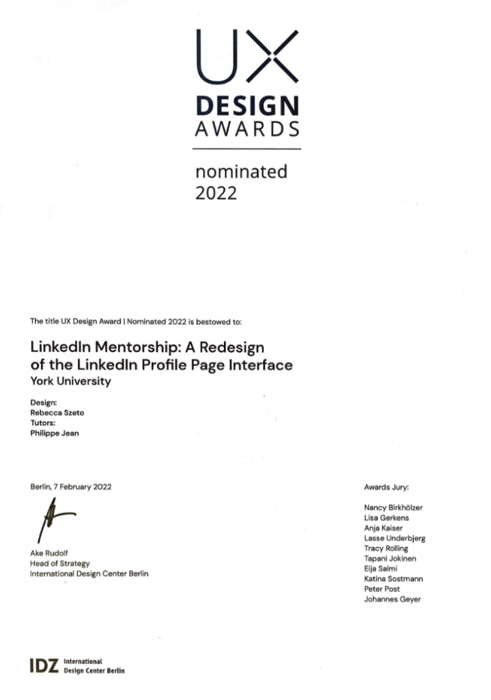

About Me
Hi, I’m Rebecca
Product Designer and Builder
I’m a product designer who thinks in systems. Most of my work starts the same way: someone hands me something that’s technically working but structurally fragile — three lines of business sharing one platform, multiple institutions being folded into a single product, a workflow nobody quite trusts — and my job is to find the architecture underneath it before I touch a single screen.
I came to design sideways. My degree is in sociology, which turned out to be better preparation than I expected: understanding how people actually behave, not how a flowchart assumes they will, is most of the job. I’ve spent the last several years applying that instinct across fintech, banking, gaming, and startup work — building design systems from the ground up, architecting information architecture for products used by financial advisors and everyday members alike, and designing AI-powered features that turn dense forecasting logic into something a person can act on without a finance degree.
I also like being close to the thing I design. I contribute CSS and flexbox directly to the design systems I build, use AI tools like Claude and Cursor as part of my process rather than a novelty bolted on at the end, and I’m currently deepening that into full-stack development because I’d rather understand the constraints I’m designing around than guess at them.
If you want to see the systems, not just the screens — that’s what in the case studies showcased in my portfolio.